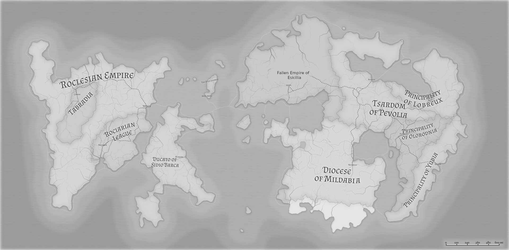

Biographical Info: Melia Mar is split between to continents (Rocevelen and Berringia), and the large island of Barcazona.¶

Rocevelen¶
Roclesia:¶
The Roclesian Empire was ruled first by a great king, a Alexander the Great/JC type guy who conquered it named Gamesh. He managed to overwhelm the magically adept Tabradians with sheer numbers. They ruled as an empire for a long time, before the Tabradian tribes gained more independence. Recently, a southern portion of the empire has also declared independence, and are closely aligned to some of the Sidio Barcans. The empire is starting to regain power, however.
Roclesia is the most advanced country magically, because they stole much of the work of the Tabradians. They also are the most wealthy.
Tabradia:¶
Grey to actually dark complexions with amber eyes with no-pupils. Tabradians were once the biggest nation on the Rocevelen continent. Then the War of the Magi happened and Gamesh took over the continent. The Tabradians became second-class citizens and their magical knowledge was stolen by the new overlords. This last a long time but eventually Tabradians shrugged off the Roclesians. They skirmish with them occasionally, but they have some independent. They are magically adept.
Rociaran:¶
League of independent Roclesian cities who declared themselves separate from the empire. They are essentially just the southern traders of Roclesia who took an opportunity to avoid paying taxes to the emperor, knowing that the Roclesian overlords were not in a position for a full-scale war. That could change however as Roclesia regains power.
Barcazona:¶
Sidio Barca: Tan skin. Newer civilization that sprung up as they developed sea vessels that could travel across to Rocevelen and Cuma Cura (seas are very rough) and more recently even to Berringia. Ruled by a Duke with a Senate and significant wealthy families. Think Venice mixed with some Turkish elements.
Cuma Cura:¶
Varied people groups. Known by the sb's as the Spice Islands. Variety of Flora and fauna not seen in the rest of the world.
Berringia:¶
Eskillia:¶
Pale to fair completion, Built an entire kingdom centered around using the Stone of Eskil to build up the Iron City. When the Stone rejected the last prince, the city went into disarray. Since the power structure of Eskillia was very centralized the kingdom fell into disarray, as it's capitol failed. What remains is a host of failed city-states, which are plagued by bandits and Pevolian raiders.
Pevolia:¶
Variety of complexions. Major religion is the Pevolian Pantheon, with the Church of the Diacci coming in a close second. They conquered the western territory within the last 100 years from the two princedoms. Pevolia used to be a lesser rival to Eskillia, but after her fall became the regional power Pevolia wants to move in and take the Eskillian city states by force, but do not due to religious pressure from the Church of the Diacci. Ruler is called Khassar. They are the most-advanced power on Berringia, and is home to many large cities and magical institutions.
Mildabia:¶
Mostly darker complexions except Pilgrims who come from all over to worship the Diacci Council (High Aglthiim). Mildabia is divided into districts and cities but more so ruled by the Church of Diacci, which is not only the majority religion in the country, but also all of Berringia.
Lobreux:¶
Grey to Yellow Complextions. Religion a mix of Diacci and local/regional deities. Mining-based. Prince is like a Khan, with a large/extended royal family. Culture a mix of Pevolian and the two southern princedoms. Economy shifting to be mining based.
Olorodnia:¶
Warm Complextions, follow the church of Diacci. Fertile agricultural hub. Prince a kind of figure-head. They are generous with their grains and are protected by Mildabia and the church. Known for being ruled by Arezians idealogues.
Yubia:¶
Grey to Warm Complextion, Ancestor Worshippers
through statues, some follow Diacci.
Ruled by a Prince from one of
the royal families. Mountanous terrain.
Economy pretty diverse due to abundant national
resources.
Non-contintental:¶
Mer-Tides:¶
Fangs, fins, but otherwise very humanlike. The Mer are an ancient race that precede the other Melians. They live in the seas in the south betweeen the continent. The larger concentrations exist on atolls farther south in the world. They have a very advanced civilization but some of their cultural heritage isolates them from other Melians.
The Frozen North:¶
Frost giants roam the icey wastes.
Religion:¶
Rocevelen religion primarily worship the Pantheon of the All-Father. Basically an Odin-type figure. Local deities are incorporated into the religion. The All-Father is somehow the progenitor of all of the other gods. Loki-like figure called Qali, a trickster. They worship Gamesh as well as a sort of hero-king.
Tabradi worship Melia, a Gaia-like goddess. Nature-y Druid-y, but also with some darker elements. Death is also a crucial character within their customs and plays a crucial role. Last they believe in Fire as a sentient entity, an evil destroyer if you will. Tabradian magic that uses fire/explosive magic is only handled by their most skilled mages, unlike magic schools in other cultures where fire spells are scene as more amateur.
Sidio Barcans worship the god of the sea, Dennis. They believe in other gods and spirits, but Dennis is the only god that holds any power. They wear necklaces with a five sided ship-steering wheel, which is said to bring good-luck at sea, a way for Dennis to identify you.
Eskillians believed that the gods visited them long ago and gave them the Stone of Eskil. After the fall of Eskillia, They basically assigned gods to part of the rituals of their every day life. They also believe in a god of ash, who the survivors blame for the fall of the kingdom and the plague currently on their land.
Pevolians do not have a state religion. Some incorporate Lobrexian deities into some local religions. There's a fair amount of "magic worshippers" called the Church of Ishtar and nonbelievers. There's also a significant amount of Diaccians within Pevolia, who are not loyal to the Khassar.
The Church of the Diacci was founded in Mildabia, in what is now the capitol city. "Agltthim" descended and delivered a message to a man revealing the "secrets of the universe". There was a single witness and that man became the first High Priest The Aglthiim would continue to periodically visit the city and the religion gained recognition as the real deal. Agltthim look like angels with colorful wings and the more powerful ones wear masks that obstruct their entire face. Since their descent (a few hundred years ago), the Diacci faith is now practiced Mildabia, Olorodnia, and all across the continent.
Lobrexians worship their own pantheon, the primary god being the Hammerlord Orsan. This god in legend is said to have built the forges for the Lobreux and taught them the value of metals.
Yubians primarily worship their ancestors. Statues containing bones of the dead litter the landscapes. Those who were considered great get their statues warped into statues of magical creatures. The Yubians believe that one day the statues will hatch and the Yubians will be reborn. There recently also has been a contingent of Diacci believers.
Fantasy Stuff:¶
Low Fantasy Level. Races are all functionally human.
Fantastic creatures do exist (dragons, vamps, the
blighted, frost giants, etc).
Fantasy level more than GOT, less than LOTR.
Magic: Magic is divided between 3 subsets. Alchema, Difede, and Stonoco.
Alchema: Using combinations of elements to create explosions, serums, and various other contraptions. "Science Magic".
Difede: Faith-based Magic. Calling upon the gods for
strength. Variety of effects obviously. Think Priests
and Warlocks and such. Also char can be a demigod.
Stonoco: Sound/Touch magic left in place by
the architects of the world. Various symbols drawing
and sounds cause magical-chaotic events to happen.
"Leftover Mechanisms of the Creators".